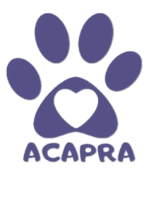
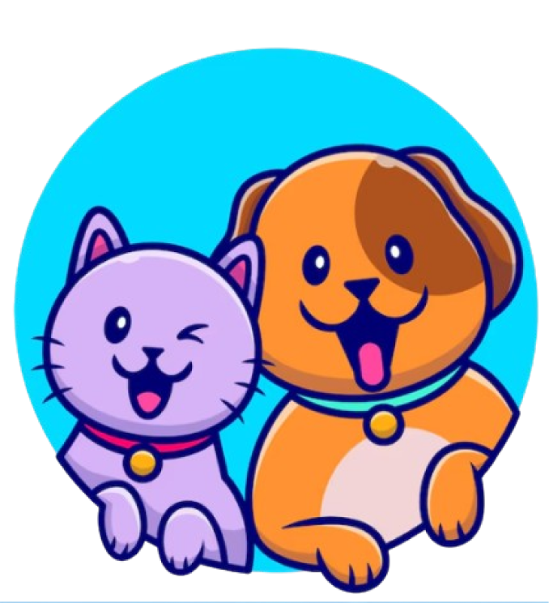

QUEM SOMOS
HISTÓRIAS DE ADOÇÃO
ESTATÍSTICAS
NOTÍCIAS
MAUS-TRATOS
CONTATO
MISSÃO

COMO VOCÊ PODE AJUDAR NESTA CAUSA?
DOE VIA PIX PARA AJUDAR NOS CUSTOS
CHAVE: 03.772.251.0001-82
DOE AMOR!
DOE CARINHO!
DOE UM LAR!
CONFIRA O PROCESSO DE ADOÇÃO
ENTREVISTA VIA WHATSAPP COM FOTOS ONDE O ANIMAL IRÁ FICAR
FOTOS DE DOCUMENTOS SOLICITADOS PELA ONG
PAGAMENTO DE TAXA DE ADOÇÃO NO VALOR DE 30R$
ATENÇÃO O PROCESSO DE ADOÇÃO SERÁ SUSPENSO CASO O INTERESSADO:
NÃO TENHA CONDIÇÕES FINANCEIRAS, FÍSICAS OU MENTAIS PARA MANTER UM ANIMAL
PENSE EM DEIXAR O ANIMAL ACORRENTADO
TENHA ANIMAIS NÃO CASTRADOS OU VACINADOS
APRESENTE ALGUM NIVEL DE DESREPEITO COM OS VOLUNTÁRIOS
TENHA RESIDÊNCIA NÃO TELADA EM CASO DE GATOS E NÃO MURADA EM CASO DE CACHORROS
REDIRECIONAMENTO PARA UM FORMULÁRIO DE ANIMAIS NECESSITANDO DE UM LAR
CONHEÇA OS ANIMAIS DISPONÍVEIS PARA ADOÇÃO
CLIQUE AQUI E ADOTE!
ADOTAR CACHORRO
ADOTAR GATO